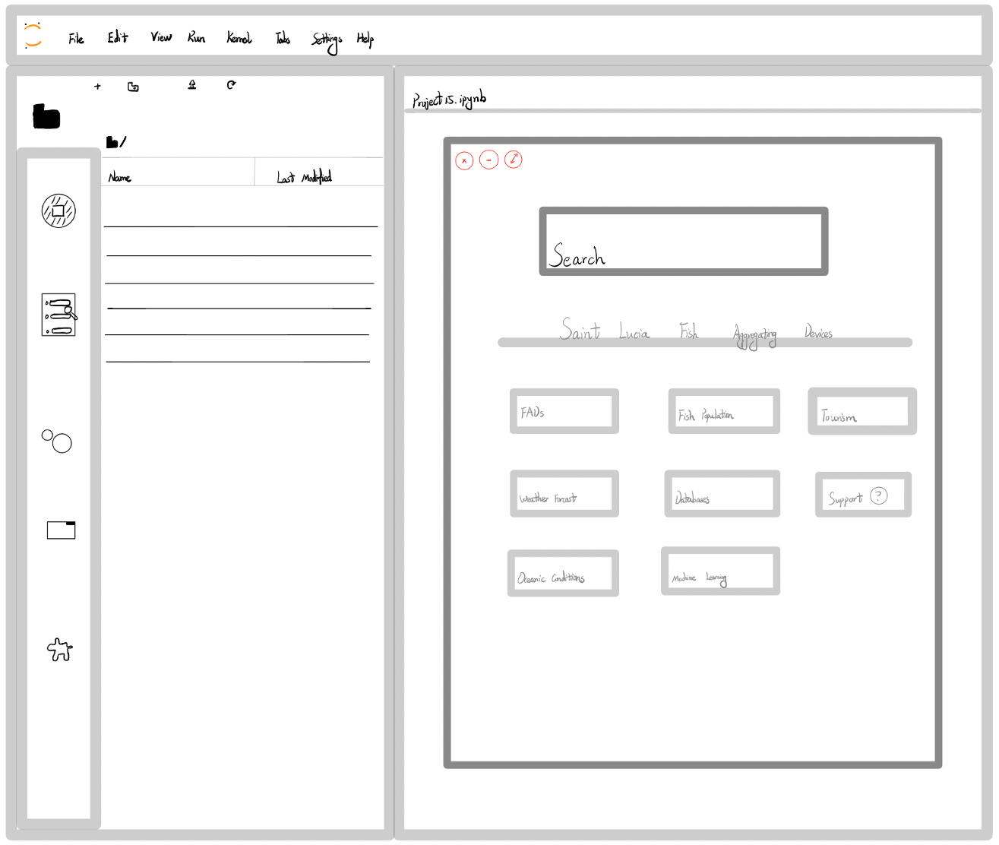
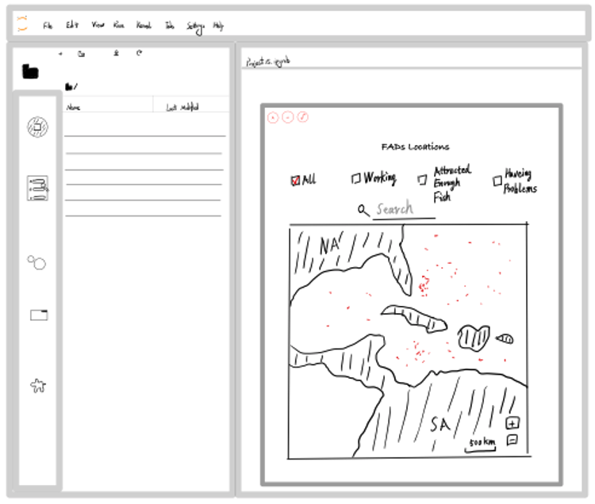
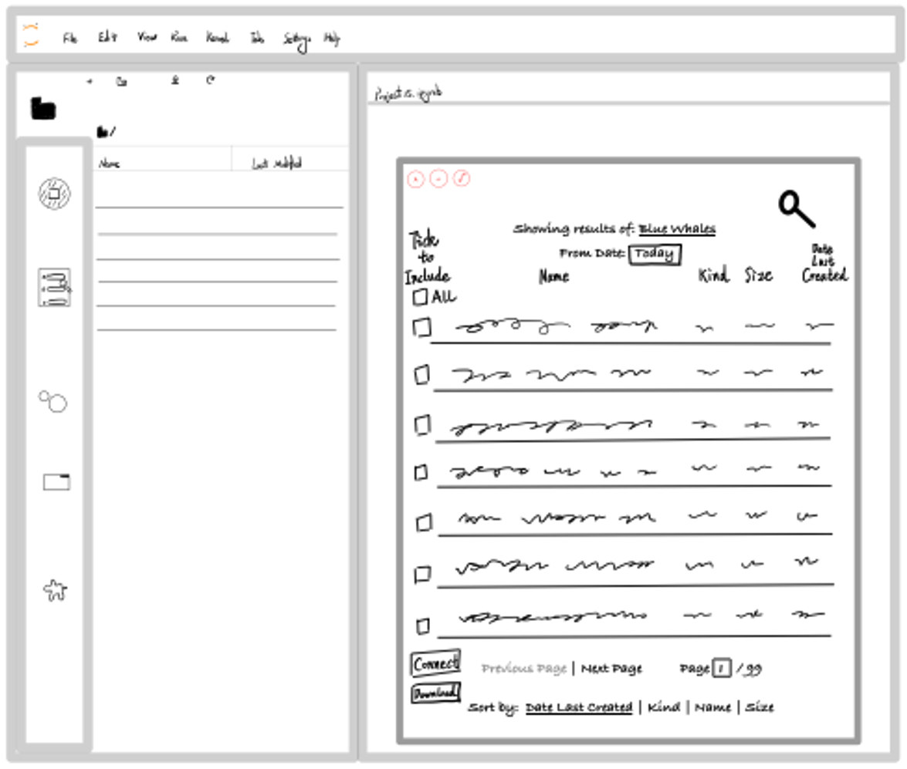
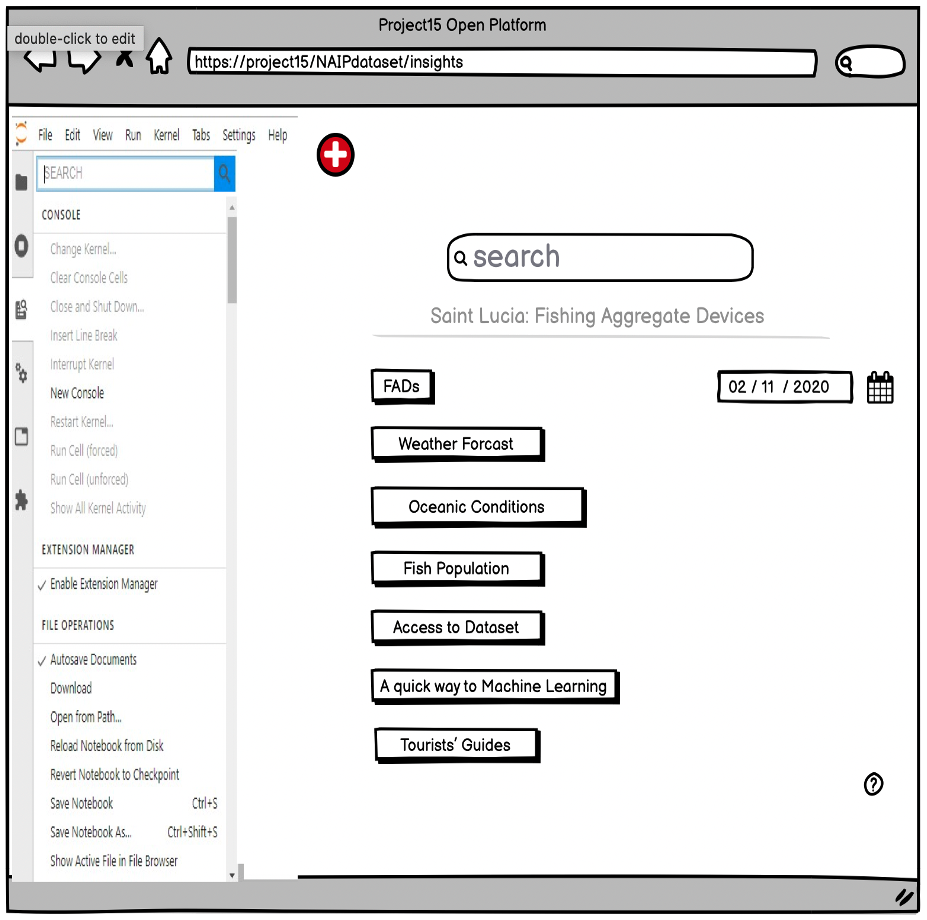
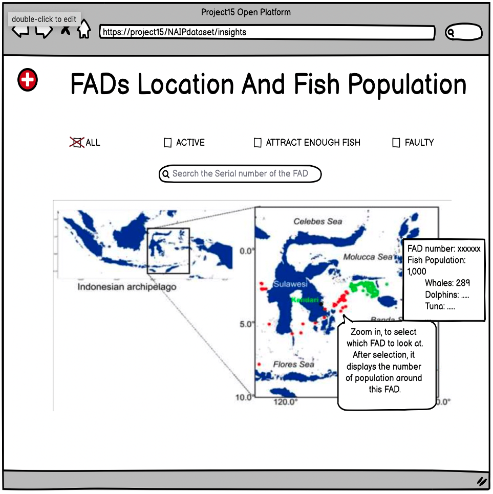
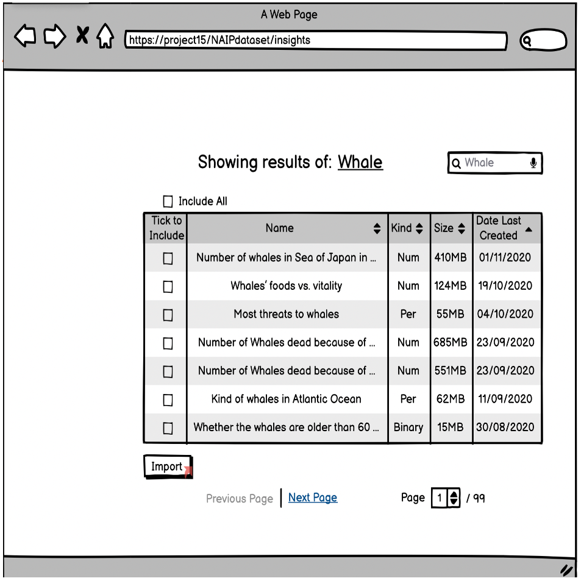

High usability and efficiently system and UI design matters a lot. A good structure of the system can be beneficial to our user, and for our goal to help data scientists, a friendly UI is necessary.
Design Principles
Simplicity and Usability.
Our target users are data scientists without high computer science skills. Follow the principle of user-centerd design, we need an UI that is friendly and easy to use.
An UI with lots of scripts (e.g. bash shell) is not ideal. We provide a graphical UI which is much simpler to use than the scripts UI for data scientists.
Users may achieve what they need by a few mouse clicks, and the functionalities of each part of the UI is easily understandable.
Sketches & Prototypes
Important! -- The Sketches and Prototypes shown in this page is not the final product, and have differences with the final version, including arrangements, functionalities and behavious etc.
The purpose of these contents is to show our original ideas and how the UI was being considered. If you want to know the actual product, please refer to our documentation.
Home Search Page
Search by FAD ID or select searching elements

Map View
Searching result shown by map

Table View
Searching result shown by table




Note: The reason for the searching keywords is not related to “FAD” and the result page shows datasets’ name and info instead of data from well-formed datasets (What our project provided now) is because our clients wanted us to give out a more general-purpose system rather than the actual one that focuses on “FAD” in the first few weeks. But the frames and structures are what we wanted.